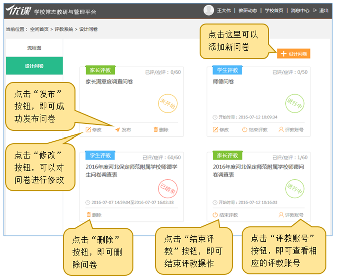
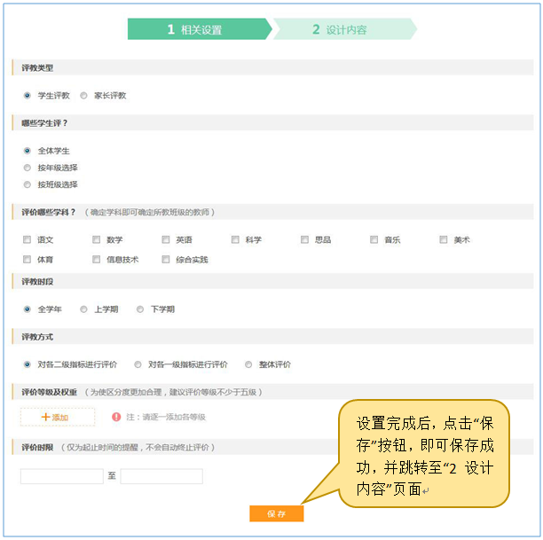
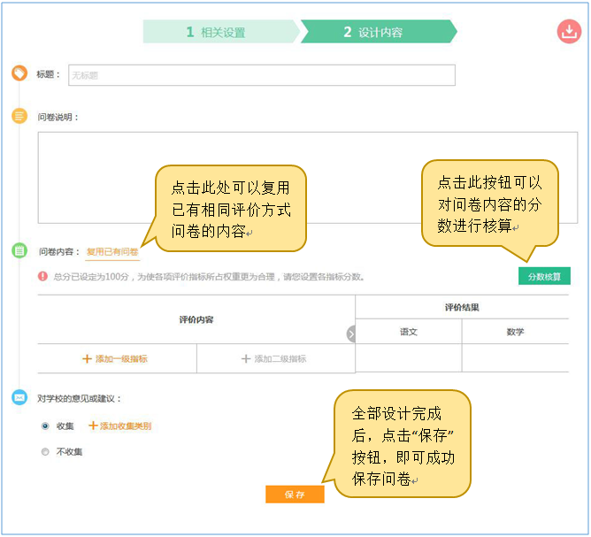
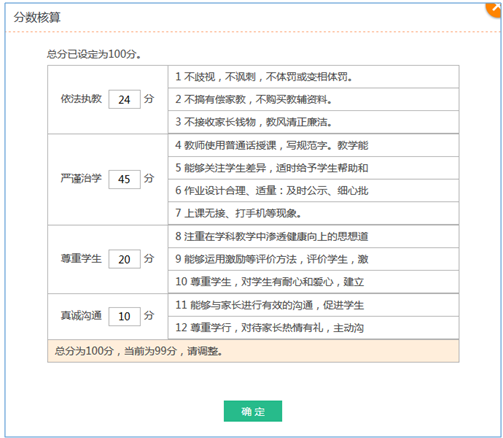
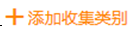
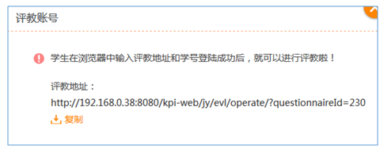
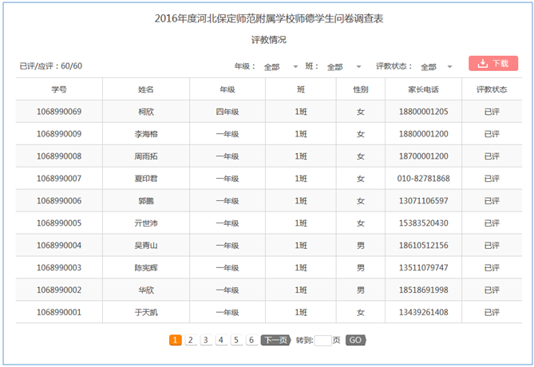

3.4.3 设计问卷
点击图3.4.2-1中的“设计问卷”后，即可进入问卷列表的页面（如图3.4.3-2）。用户可以在此页面可以进行添加新问卷、修改/查看问卷、发布问卷、删除问卷、查看评教账号、结束评教等操作。
用户点击图3.4.3-2右上角的按钮后，即可进入“设计问卷→1 相关设置”页面（如图3.4.3-3），用户可以在此页面进行问卷的相关设置。
•评教类型：选择问卷的评教群体。
•哪些学生评：选择评教群体的范围。
•评价哪些学科：选择评教群体的所评价的学科教师。
•评教时段：选择评价时段，只是作为记录。
•评价方式：选择问卷的评价方式，系统分为三种“对各二级指标进行评价（评价人需对评价学科的各二级指标进行评价）、对各一级指标进行评价（评价人需对评价学科的各一级指标进行评价）、整体评价（评价人只需对评价学科进行整体评价）”。
•评价等级及权重：在此处设置评价人在评价时所选择的评价等级，以及相应的权重（用于系统根据评价人的评价等级转换为相应的权重，计算出教师最终的得分）。
•评价时限：设置评价的起止时间，仅为提醒用户，不会自动终止评价问卷。
•“保存”按钮：设置完成后，点击此按钮即可保存成功相关的设置，并跳转至“2 设计内容”页面（如图3.4.3-4）。
用户可以在此页面输入问卷的标题、问卷说明、添加问卷内容、对学校的意见或建议等操作。
•问卷内容：用户可以自行添加问卷内容，也可以点击“复用已有问卷”复用已有相同评价方式问卷的内容。
•分数核算：系统默认评价总分为100分，针对于评价方式为“对各二级指标进行评价和对各一级指标进行评价”的问卷，用户可以对各指标设置相应的分数。设置完成后，点击此按钮对分数进行核算，如若不合理，系统会给予相应的提示信息（如图3.4.3-5），用户在此对话框中调整后，点击“确定”按钮即可。
•对学校的意见或建议：用户可自行选择是否收集。如若收集，用户也可按类别进行收集，点击进行添加即可。
•“保存”按钮：全部设计完成后，点击此按钮即可保存成功，并跳转至“设计问卷列表”页面（如图3.4.3-2）。
问卷设计完成后，点击图3.4.3-2中的“发布”按钮即可成功发布相应的问卷。问卷发布后，可以点击“评教账号”进行查看相应的评教地址，如图3.4.3-6（学生评教）和如图3.4.3-7（家长评教）所示。针对于“学生评教”，用户可以将评教地址发送给学生，学生打开网址，输入学号即可进入评教页面；针对于“家长评教”，用户可以将评教地址发送给每位家长，家长打开链接即可进入评教页面。点击图3.4.3-7中的“查看”，即可查看全部家长评教账号或未发送成功的家长评教账号（如图3.4.3-8），也可点击右上角的“下载”按钮，下载至本地计算机。
学生或家长评教过程中，用户可以在各问卷右上角时时查看到相应的评教进度（已评/应评），点击后，可以查看到详细内容（如图3.4.3-9），也可点击右上角的“下载”按钮，下载至本地计算机。
学生或家长评教完成后，用户可以点击图3.4.3-2中的“结束评教”按钮进行结束评教。结束评教后，用户可以在“结果统计”、“分析报告”查看相应问卷的评教结果和综合分析报告。（注：结束评教后，未评教的学生或家长将不能再进行评教。）